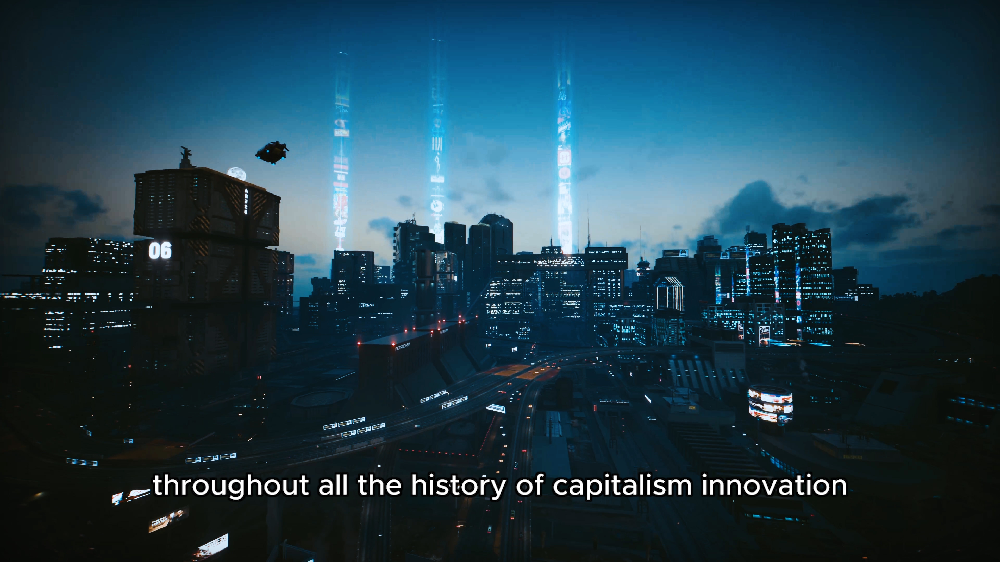

THE CORPORATE DIALECT

ABOUT THE PROJECT
Dystopian video games imagine worlds run by corporations: total surveillance, private armies, and human life reduced to data. “The Corporate Dialect” places visuals from those worlds over real interview recordings from today’s tech executives. Heard together, the fiction stops sounding like exaggeration and starts sounding like a shared language.